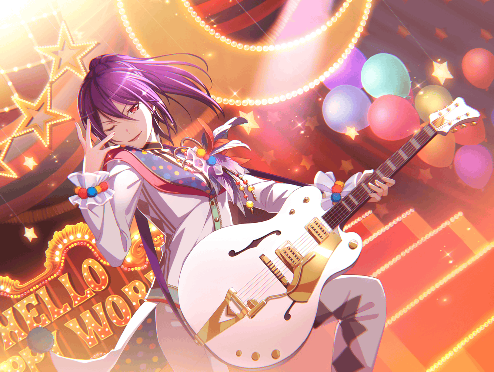

薫
ああ……風よ、吹け
薫
……ん？
やあ、君か。
こんなところで奇遇だね
薫
……いや、
別に今度の舞台のセリフを練習してたわけじゃないんだ
薫
ただ……ふと思い出して、口にしただけで
薫
これは、以前の演劇発表会のときに演じたものでね、
私にとって……思い出の役なんだ
薫
もちろん、今まで演じてきた役は、
全て大切な思い出だけど……
薫
別格といっていいほどに、
深い深い思い出があるんだ
薫
もし、止まり木に腰をかける時間があるのなら、
聞いてくれるかい？
私の思い出話を……
薫
……ありがとう。
君なら、そう言ってくれると思ったよ
薫
ついさっき、
以前、演劇発表会で演じたことがあると言っただろう？
薫
実は、その演劇発表会が終わった後、
演劇部の部室に戻った私は、
運命的な出会いをすることになるんだ
薫
……こころと花音だよ。
あのふたりが、私に会いに来てくれたんだ
薫
こころはとても強引な誘い文句で、私をバンドに誘った
薫
今まで数多のスカウトを受けてきたが、
あんなストレートな物言いは初めてで、とても驚いたよ
薫
その後、運命に導かれるままに
はぐみとミッシェルに出会ったんだ……
薫
まるで稲妻に撃ち抜かれたような衝撃だった……
あの日のことは、今でも鮮明に思い出せる
薫
君にもあるかい？
そんな強烈な思い出が……
薫
私は、これまでの出来事を振り返っても、
あの日以上の衝撃は未だ体感できていないよ
薫
……あの日、彼女達に出会ったことで、私の運命は大きく変わった
薫
大げさだと思うかい？
薫
だが、本当にそう思っているんだ。
運命を変える力を持っているんだよ、こころは
薫
こころが私をスカウトしなければ、
今の私はここにいないからね
薫
役者として楽器を手にすることはあったとしても、
私自身の自らの意思で、楽器を奏でることはなかったと思うよ
薫
今まで、役者としてだけやってきた私だけれど、
バンドと出会って世界が広がったんだ
薫
具体的に、と問われると難しいけれど……
演劇の世界とは違う魅力が、バンド活動にはある
薫
バンドを始めたことによって、
今まで以上に深い演技ができるようになったと思うよ
薫
それはやはり、世界が広がったからだろう
薫
知らないことを知ることができたり、
体験できなかったことを体験できたり……
薫
そういったすべての出来事が、私の演技をより輝かせる
薫
それと同じく、
演劇活動も私のバンド活動を輝かせる……！
薫
今の私にはバンドも演劇も、
かけがえのない大切な存在なんだ……！
薫
……ふっ、少し熱く語ってしまったようだね
薫
あの日のことを思い出すと、
心がどんどん熱くなってしまうんだよ
薫
本当にこころ、花音、はぐみ、ミッシェルに出会えてよかった
薫
彼女達に出会って、バンドを始めたからこそ、
君にも出会うことができた
薫
ふふ、照れている子猫ちゃんはかわいいね
薫
そんな君の表情を見ることができるのだって、
バンドに加入したからだ
薫
だが、たまに考えることがある
薫
もしあの日、誰にも出会わなければ、
今の私はどうだったのか……
薫
君はどう思う？
薫
……そうだな、バンドはやっていなかっただろう
薫
今までと何も変わらない生活で……
薫
ああ、いけないね。
そんなことを考えていたら、
なんだか恐怖に襲われてきたよ
薫
今までの生活に不満があるわけではないけれど、
バンドという大切な存在がなかったらなんて……
薫
そんなことを考えるだけで恐ろしい
薫
きっと、出会う運命だったんだ。
私とバンドメンバーは、運命共同体だから……
薫
うん、そうだ。
そうに違いない！
薫
きっと前世からつながっていたんだ……私達は
薫
君もそう思うだろう？
だから私達のバンドはとても楽しくて、
演奏していると幸福に満たされる！
薫
あの充実感は運命だからに違いない！
薫
そう考えると……全てが運命なのだろう……
薫
あの日、演劇発表会があったのも、
私があの役を演じたのも……全ては運命！
薫
ということは……
これからの運命も、決められているのか？
薫
それはそれで楽しみのようで、
少し恐ろしいな
薫
どんな運命が待っているのか……
薫
ふっ、今は知るすべはなしか
薫
まぁ、どんな運命であろうと、
私は私の使命を果たすだけ
薫
世界を笑顔に……その言葉に導かれるままに笑顔を増やす
薫
たとえ困難な運命が待ち構えていようと、
私は仲間達と共に乗り越えてみせよう！
薫
そのためにも、私はもう行かなければならない
薫
これから運命共同体の彼女達と、会議があるからね
薫
子猫ちゃん、今日は会えて嬉しかったよ
薫
君は今からライブハウスへ行くのかい？
薫
そうか、送っていけないのが残念だ。
気を付けていくんだよ。
……それじゃあね